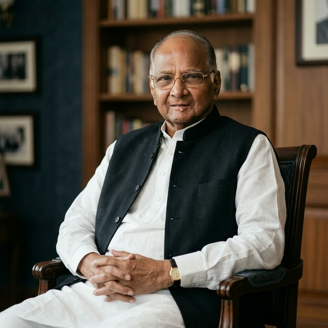
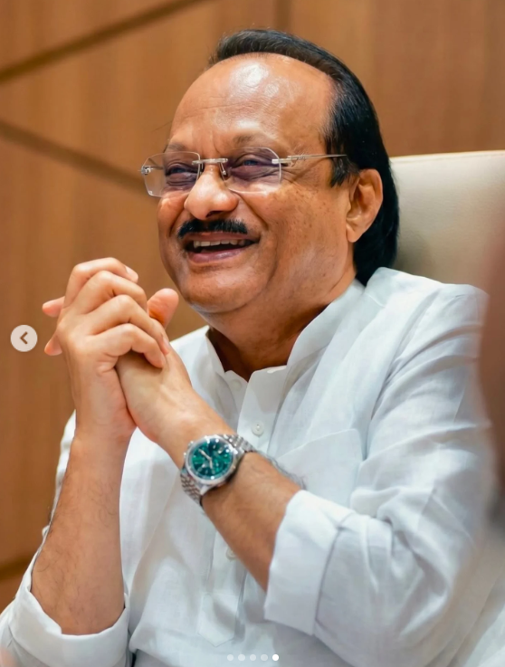

Tracing the journey of visionary leaders who shaped modern Maharashtra and India.

Founder of NCP | 3-time Chief Minister | Former Defence & Agriculture Minister
Sharad Pawar is a titan of Indian politics whose journey began in Baramati. With a political career spanning over five decades, he is known for his administrative brilliance, strategic thinking, and nationwide influence. As a three-time Chief Minister of Maharashtra, he played a key role in strengthening the state’s industrial, agricultural, and cooperative sectors. At the national level, as Defence Minister under P. V. Narasimha Rao, he contributed to strengthening India’s defence administration. Later, as Union Agriculture Minister for a decade, he was instrumental in shaping policies that improved food security, farmer support systems, and agricultural productivity. He also founded the Nationalist Congress Party, establishing a strong political force in Maharashtra and beyond. Known as a master strategist and kingmaker, Sharad Pawar has played a crucial role in forming governments and guiding political alliances. His deep understanding of grassroots politics, combined with his ability to influence national decision-making, has made him one of the most powerful and respected leaders in Indian politics.
The journey from a young MLA to a National Mentor.
Elected as MLA from Baramati for the first time at the age of 26. Joined the Indian National Congress.
Became the youngest CM of Maharashtra at 38. Formed the Progressive Democratic Front government.
Served his second (1988-1991) and third (1993-1995) terms as the Chief Minister of Maharashtra.
Served as the Defence Minister under Prime Minister P. V. Narasimha Rao.
Founded the Nationalist Congress Party (NCP) after a split from the Congress party.
Played a major role in Indian agriculture policy as the Union Minister for a full decade.
Known as the "Kingmaker" and a senior mentor figure in Maharashtra and National politics.

Deputy Chief Minister | Senior Administrator | Grassroots Connect
Ajit Pawar, popularly known as “Dada”, is known for his strict, result-driven administration and strong connection with people, especially in Baramati. He is recognized as a leader who focuses on fast execution, ensuring that government decisions are implemented efficiently. As Irrigation Minister, he improved canal networks and water management in drought-prone areas, boosting agriculture and rural development. In the energy sector, he worked to stabilize electricity supply and reduce power cuts, supporting both households and industries. His biggest contribution is the transformation of Baramati into a model development region with strong infrastructure, industrial growth, and educational expansion supported by institutions like Vidya Pratishthan. As Deputy Chief Minister and Finance Minister, he is known for disciplined financial management and effective fund allocation for infrastructure, especially in regions like Pune. With his hands-on approach and quick decision-making, Ajit Pawar has built a reputation as one of Maharashtra’s most effective and powerful administrators.
Entered politics and briefly served as a Member of Parliament (MP).
Elected as MLA from Baramati for multiple consecutive terms, becoming the face of development in the city.
Held key portfolios including Water Resources, Energy, and Finance in various governments.
Served as Deputy Chief Minister multiple times (2010-2014, 2019, 2019-2022, and 2023-Present).
Split from the NCP and formed his own faction, joining the ruling Mahayuti alliance in Maharashtra.
A quick comparison of their political journeys and roles.
| Aspect | Sharad Pawar | Ajit Pawar |
|---|---|---|
| Generation | Veteran (since 1967) | Second-gen leader (since 1991) |
| Role Focus | National + State Politics | Mostly State Politics |
| Key Achievement | 3-time CM, Union Minister | Multiple-time Deputy CM |
| Party Status | Founder of NCP | Split faction leader |
Key moments that defined Baramati's political landscape.
Sharad Pawar becomes Maharashtra's youngest CM.
Nationalist Congress Party (NCP) is formed.
Ajit Pawar takes oath as Deputy CM for the first time.
The surprise early morning oath ceremony (3-day government).
The major NCP split and alliance shift in Maharashtra.